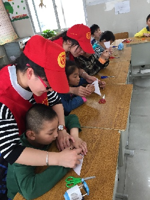
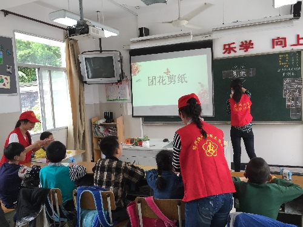

自强 阳光 精彩
桂电志愿者网 日期：2015-05-25 来源：
今年5月17日是第25个“全国助残日”。5月15日上午，以“自强 阳光 精彩”为主题的助残日活动在绍兴市聋哑学校举行。绍兴市残联副理事长朱献飞、共青团绍兴市委副书记王晶等领导以及来自社会各界的爱心人士、志愿者们近百人出席了这个活动。本次活动得到了绍兴市残联、共青团绍兴市委、绍兴市志愿者协会等单位的大力支持。
整个活动分为校园课本剧展示和阳光课堂两部分。由绍兴区顺丰速递有限公司协办的课本剧表演现场，聋学生自导自演的课本剧《一颗钉子》、《三个和尚》和《皇帝的新装》，都以生动、自然、富有感染力的表演赢得了在场观众的一个个点赞。曾在2014市直学校迎新文艺汇演中获得一等奖的小品《较量》也在这次活动中亮相展示，两位学生演员幽默、诙谐、夸张的演技把整个活动现场推向了高潮。期间，速递公司的志愿者还为学生们带来了游戏和爱心传递节目，整个活动在全体聋学生的手语歌《感恩的心》表演中圆满结束。
在活动的另一个现场，共青团市委志愿者协会的阳光课堂正在如火如荼的进行着。在手工制作和公益美工课上，大家感受到的是“此处无声胜有声”的美妙情境。聋学生专注的眼神、大胆的想象、执着的尝试，让手中的剪纸作品和陶艺作品都充满了创意，得到了领导和来宾的赞赏。在糕点制作课上，同学们有分工、有合作，在志愿者的指导下做出了鲜香松软的蛋糕和精致的点心。香飘入鼻，引得大家争相品尝。大家在赞叹的同时，不禁对聋孩子刮目相看。

活动中，绍兴市残联副理事长朱献飞、共青团绍兴市委副书记王晶等领导都饶有兴致地到各个现场看望并慰问了聋学生，充分肯定了学校近年来的进取发展，特别是在补偿缺陷、挖掘潜能、融入社会方面成效显著，认为此次活动体现了学校的教育追求，尤其通过展示孩子们自编自导的节目、亲手制作的作品，让聋生在与普通人的交流中感受尊重、获得价值、提升自信，为孩子们点亮成长路上那盏自强的心灯。任文忠校长对各位领导和爱心人士的到来表示热烈的欢迎和衷心的感谢。他说：“残疾人事业是一项社会工程，离不开党和政府的重视和关心，也离不开社会各界的理解支持。长期以来，社会各界爱心人士十分关心聋学生的成长，十分关注支持特殊教育事业的发展。相信随着社会文明程度和经济水平的提高，这些孩子会受到更多的关爱和保护。”

【责任编辑：李博晶】